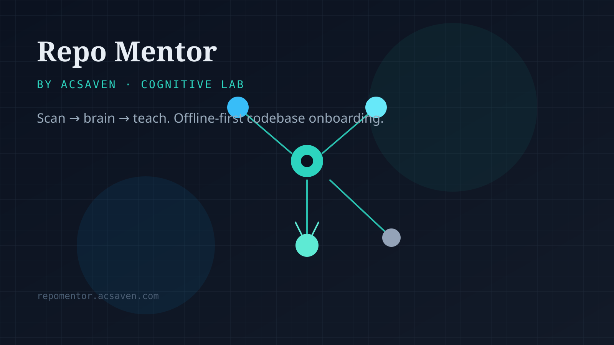

Repo Mentor
Scan → brain → teach. Offline-first codebase onboarding. This page is a static capture for when the live domain is blocked.

Scan → brain → teach. Offline-first codebase onboarding. This page is a static capture for when the live domain is blocked.
